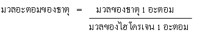
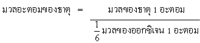
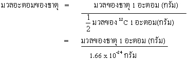
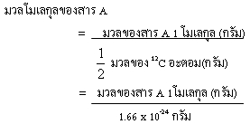

1. มวลอะตอม
ปริมาณสารสัมพันธ์ (stoichiometry) มาจากภาษากรีก 2 คำ คือ stoicheion แปลว่า ธาตุ และ metron แปลว่า การวัดปริมาณสารสัมพันธ์ เป็นคำศัพท์ที่ใช้ระบุความสัมพันธ์เชิงปริมาณขององค์ประกอบของสารและปฏิกิริยา หรือ สมการเคมีที่เกี่ยวข้อง ซึ่งมีความสำคัญอย่างยิ่งเพราะใช้คาดคะเนหรือคำนวณปริมาณขอองสารที่ต้องใช้เป็นสารตั้งต้น (reactant) เพื่อให้ได้ปริมาณสารผลิตภัณฑ์ (product) ตามต้องการ หรือใช้บอกว่าสารตั้งต้นจะทำปฏิกิริยาหมดหรือมีเหลือและปฏิกิริยาจะได้ผลผลิตอย่างมากที่สุดเท่าใด ดังนั้น ปริมาณสารสัมพันธ์จึงหมายถึง การวัดปริมาณของสารต่าง ๆ โดยเฉพาะปริมาณของสารที่เกี่ยวข้องกับการเกิดปฏิกิริยาเคมีทั้งของสารตั้งต้นและสารผลิตภัณฑ์ตลอดจนปริมาณของพลังงานของสารที่เปลี่ยนแปลงในปฏิกิริยาเคมี
การวัดธาตุในที่นี้ เริ่มจากการหามวลของธาตุ ซึ่งเราทราบแล้วว่าธาตุมีอนุภาคมูลฐาน 3 อนุภาค คือ โปรตรอน อิเล็กตรอน และนิวตรอน โดยธาตุทั้ง 3 มีมวล ดังนี้
โปรตรอน (p) มีมวลประมาณ 1.6726 X 10-24 g
นิวตรอน (n) มีมวลประมาณ 1.6749 X 10-24 g
อิเล็กตรอน (e) มีมวลประมาณ 9.1096 X 10-28 g
จะเห็นว่า อิเล็กตรอน มีมวลน้อยที่สุด ในการคำนวณจึงไม่นำไปคิดมวลของธาตุ มวลของธาตุจึงคิดเพียง โปรตรอน และ นิวตรอน ซึ่งอนุภาคทั้งสองอยู่ในนิวเคลียส
ในการคำนวณปริมาณสารสัมพันธ์ต้องอาศัยข้อมูลจากตารางธาตุ เพื่อจะได้ทราบว่าธาตุที่มารวมกันเป็นสารประกอบนั้นมีมวลเท่าใด เราทราบได้จาก เลขมวล หรือ มวลอะตอม ของธาตุ แต่มวลอะตอม ไม่ใช่มวลที่แท้จริง เราต้องนำ มวลของอนุภาคไปคูณด้วยจำนวนอนุภาคที่มีผลต่อน้ำหนัก ซึ่งก็คือ เลขมวล X 1.66 X 10-24 g
มวลอะตอม (อังกฤษ: Atomic mass) คือมวลของอะตอมหรือไอโซโทปอย่างหนึ่งของธาตุใด ๆ มีหน่วยเป็น หน่วยมวลอะตอมหรือเอเอ็มยู (Atomic Mass Unit - AMU) โดย 1 เอเอ็มยู มีค่า 1.66 x 10-24 กรัม โดยน้ำหนักนี้เทียบมาจาก ไฮโดรเจนอะตอม 1 อะตอม หรือ 1/12 ของคาร์บอน-12 1 อะตอม หรือ 1/16 ของออกซิเจนอะตอม 1 อะตอม
นักวิทยาศาสตร์หลายคน เช่น ดอลลัน เก - ลูซัก ลาวัวซิเอและอาโวกาโดร ให้ความสนใจศึกษามวลอะตอมของธาตุ โดยสังเกตการณ์รวมตัวของธาตุเมื่อเกิดเป็นสารประกอบ พบว่าธาตุเหล่านั้นจะรวมตัวด้วยอัตราส่วนจำนวนอะตอม หรืออัตราส่วนโดยมวลคงที่ สำหรับดอลตัน นั้นเชื่อว่าอะตอมของธาตุต่างชนิดกันมีมวลไม่เท่ากัน จึงได้พยายามหามวลอะตอมของแต่ละธาตุ แต่เนื่องจากอะตอมมีขนาดเล็กมาก (ปัจจุบันพบว่ามีรัศมีอะตอมยาวประมาณ 10 -10 เมตรเท่านั้น) อะตอมที่เบาที่สุดคืออะตอมของไฮโดรเจนซึ่งมีมวลประมาณ 1.66 x 10-10 กรัม และอะตอมที่หนักที่สุดมีมวลประมาณ 250 เท่าของมวลนี้ ทำให้ไม่สามารถชั่งมวลของอะตอมโดยตรงได้ ดอลตันจะหามวลอะตอมของธาตุโดยใช้วิธีการเปรียบเทียบว่า อะตอมของธาตุที่ต้องการศึกษามีมวลเป็นกี่เท่าของอะตอมของธาตุที่กำหนดให้เป็นมาตรฐานดอลตันเสนอให้ใช้ธาตุไฮโดรเจนซึ่งมีมวลน้อยที่สุดเป็นธาตุมาตรฐานในการเปรียบเทียบหามวลอะตอมของธาตุโดยกำหนดให้ธาตุไฮโดรเจน 1 อะตอมมีมวล 1 หน่วย ตัวเลขที่ได้จากการเปรียบเทียบมวลของธาตุ1อะตอม กับมวลของธาตุมาตรฐาน 1 อะตอม เรียกว่า มวลอะตอมของธาตุ ซึ่งเขียนได้โดยความสัมพันธ์ดังนี้

ต่อมามีผู้เสนอให้ใช้ธาตุออกซิเจนเป็นมาตรฐานแทนธาตุไฮโดรเจนเพราะว่าธาตุออกซิเจนอยู่เป็นอิสระในบรรยากาศและทำปฏิกิริยากับธาตุอื่นๆได้ง่าย แต่ธาตุออกซิเจน 1 อะตอม มีมวลเป็น 16 เท่าของไฮโดรเจน 1 อะตอมจึงเขียนเป็นความสัมพันธ์ได้ดังนี้

เนื่องจากธาตุออกซิเจนมีหลายไอโซโทป คือ 16 O 17 Oและ 18 O และนักเคมีกับนักฟิสิกส์กำหนดมวลอะตอมของออกซิเจนไม่เหมือนกัน โดยนักเคมีใช้มวลอะตอมเฉลี่ยของออกซิเจนทั้ง 3 ไอโซโทป แต่นักฟิสิกส์ใช้มวลอะตอมของ16 O เท่านั้น ตั้งแต่ พ.ศ.2504 เป็นต้นมา นักวิทยาศาสตร์จึงตกลงใช้สูตร 12C ซึ่งเป็นไอโซโทปหนึ่งของคาร์บอนเป็นมาตรฐานในการเปรียบเทียบมวล โดยกำหนดให้ 12 C จำนวน 1 อะตอม มีมวล 12 หน่วยมวลอะตอม ดังนั้น 1 หน่วยมวลอะตอมจึงมีค่าเท่ากับ 1/12 มวลของ จำนวน 1 อะตอม หรือเท่ากับ12 O กรัม มวลอะตอมของธาตุเขียนเป็นความสัมพันธ์ได้ดังนี้

จากตัวอย่างทั้งสองคงช่วยให้นักเรียนเข้าใจได้ว่ามวลอะตอมของธาตุจะไม่มีหน่วยกำกับ เพราะเป็นค่าเปรียบเทียบระหว่างมวล 1อะตอมของธาตุนั้น กับมวลของ12C แต่มวลของธาตุ 1 อะตอมเป็นมวลที่แท้จริงของธาตุนั้นจึงมีหน่วยกำกับไว้ด้วย ธาตุในธรรมชาติส่วนใหญ่มีหลายไอโซโทป เช่น คาร์บอนมี 3 ไอโซโทป คือ12C 13C และ 14C แต่ละไอโซโทปมีมวลอะตอมและปริมาณที่พบในธรรมชาติแตกต่างกันคือ มีมวลอะตอม 12.0000 มีปริมาณร้อยละ 98.892 13C มีมวลอะตอม 13.00335 มีปริมาณร้อยละ 1.108ส่วน 14C เป็นไอโซโทปกัมมันตรังสีมีปริมาณน้อยมาก การคำนวณมวลอะตอมของคาร์บอนจึงคิดจากมวลอะตอมและปริมาณของไอโซโทปเฉพาะที่พบอยู่ในธรรมชาติ
2. มวลโมเลกุล
โมเลกุล หมายถึง อนุภาคเล็กที่สุดของสาร ซึ่งสามารถอยู่เป็นอิสระและแสดงสมบัติเฉพาะตัวของสารนั้น ๆ ได้ อาจเป็นได้ทั้งโมเลกุลของธาตุหรือสารประกอบก็ได้ เช่น
โมเลกุลของธาตุเกิดจากอะตอมชนิดเดียวกันมาอยู่รวมกัน เช่น ก๊าซไฮโดรเจน 1 โมเลกุลประกอบด้วยธาตุไฮโดรเจน 2 อะตอม ส่วนก๊าซคลอรีน 1 โมเลกุลประกอบด้วยธาตุคลอรีน 2 อะตอม ส่วนโมเลกุลของสารประกอบเกิดจากอะตอมต่างชนิดกันมารวมกัน เช่น แอมโมเนีย 1 โมเลกุลประกอบด้วยธาตุไนโตรเจน 1 อะตอม และธาตุไฮโดรเจน 3 อะตอม ส่วนน้ำ 1 โมเลกุลประกอบด้วยธาตุไฮโดรเจน 2 อะตอม และธาตุออกซิเจน 1 อะตอม
เนื่องจากโมเลกุลมีขนาดเล็กมาก การชั่งเพื่อหามวลจึงทำได้ยาก ดังนั้นการหามวลโมเลกุลจึงใช้วิธีการเปรียบเทียบกับธาตุมาตรฐานเช่นเดียวกับมวลอะตอม
มวลโมเลกุลคือ มวลเปรียบเทียบว่าสารนั้น 1 โมเลกุล มีมวลเป็นกี่เท่าของ 1/12 มวลของคาร์บอน – 12 1 อะตอม เช่น ก๊าซไนโตรเจนมีมวลโมเลกุล 28 หมายความว่า ก๊าซไนโตรเจน 1 โมเลกุลมีมวลเป็น 28 เท่าของ 1/12 มวลของคาร์บอน – 12 1 อะตอม ดังรูป
มวลโมเลกุลเป็นมวลเปรียบเทียบว่า สารนั้น 1 โมเลกุลมีมวลเป็นกี่เท่าของ 1/12 มวลของ C – 12 1 อะตอม เขียนความสัมพันธ์ได้ดังนี้

3 มวลไอออน
มวลของธาตุส่วนใหญ่อยู่ที่นิวเคลียส (จำนวนโปรตรอน + จำนวนนิวตรอน) เมื่ออะตอมรับอิเล็กตรอนเพิ่มเข้ามาจะกลายเป็นไอออนลบ (anion) หรืออะตอมสูญเสียอิเล็กตรอนไปจะกลายเป็นไอออนบวก (cation) จะเห็นว่า เมื่อธาตุกลายเป็นไอออนบวกหรือไอออนลบ มวลที่นิวเคลียสไม่เปลี่ยน ดังนั้น มวลของไอออนจะมีค่าเท่ากับมวลอะตอมนั้นเอง
มวลของไอออนใด ๆ 1 ไอออน = มวลอะตอม X 1.66 X 10-24 g
สูตรไอออน เช่น NH4+ , NO3- , SO42-
มวลสูตรไอออนใด ๆ 1 ไอออน = มวลสูตรไอออน X 1.66 X 10-24 g
สรุป มวลไอออนหรือมวลสูตรไอออน เป็นค่าเปรียบเทียบจึงไม่มีหน่วย เป็นค่าตัวเลขที่บอกให้ทราบว่ามวลไอออนหรือมวลสูตร 1 ไอออน มีมวลเป็นกี่เท่าของ 1/12 มวลของคาร์บอน – 12 1 อะตอม
4. โมล
ปริมาณสาร 1 โมล คือ ปริมาณสารที่มีจำนวนอนุภาคเท่ากับจำนวนอะตอมของคาร์บอน - 12 มวล 0.012 กิโลกรัม หรือ 12 กรัม คาร์บอน -12 หมายความว่า คาร์บอน-12 1 อะตอมมีมวล 12 amu หรือ 12 ×1.66×10-24 กรัม คาร์บอน – 12 มวล 12×1.66×10-24 กรัม คือ คาร์บอน -12 1 อะตอม คาร์บอน -12 มวล 12 กรัมคือ คาร์บอน-12 = 12 กรัม คือ -12 = 12 กรัม × 1 = 6.02×1023อะตอม /12×1.66×10-24 กรัม
คาร์บอน -12 จำนวน 6.02×1023 อะตอม หรือ 1 โมลมีมวล 12.00 กรัม เท่ากับมวลอะตอมของคาร์บอน -12 มีหน่วยเป็นกรัม
ทำนองเดียวกัน ออกซิเจนมีมวลอะตอม 16.00 หมายความว่า ออกซิเจน 1 อะตอม มีมวล 16.00amu หรือ 16×1.66×10-24 กรัม ออกซิเจน 1 โมลหรือ 6.02×1023 อะตอมจะมีมวล = 16×1.66×10-24 กรัม ×6.02×1023 อะตอม /1 อะตอม
สำหรับสารบางชนิดไม่ได้อยู่ในลักษณะเป็นโมเลกุล แต่เป็นไอออนเกาะกันอยู่เป็นโครงผลึก เช่น โซเดียมคลอไรด์ (NaCl) ประกอบด้วยโซเดียมไอออน (Na+) กับคลอไรด์ไอออน(Cl-) ดังนั้นโซเดียมคลอไรด์ 1 โมล ประกอบด้วยโซดียมไอออน 6.02×1023 ไอออนและคลอไรด์ไอออน 6.02×1023 ไอออนหรืออาจกล่าวได้ว่า โซเดียมคลอไรด์ 1 โมลประกอบด้วยโซเดียมไอออน 1 โมลไอออนและคลอไรด์ไอออน 1 โมลไอออน เนื่องจากเราถือว่ามวลของไอออนธาตุใดๆมีค่าเท่ากับมวลอะตอมของธาตุนั้น โซเดียมคลอไรด์ 1 โมล มีมวล = 23+35.5 = 58.5 กรัมซึ่งมีค่าเท่ากับมวลของสูตรของโซเดียมคลอไรด์ คือ 58.5 มีหน่วยเป็นกรัม จึงกล่าวได้ว่า สารที่ไม่ได้อยู่ในลักษณะที่เป็นโมเลกุล ที่มีองค์ประกอบเป็นไอออน ปริมาณสาร 1 โมลจะมีมวลเป็นกรัมเท่ากับมวลสูตร หรือมวลไอออน ของสารนั้น
โมล คือ หน่วยของปริมาณสารหน่วยหนึ่งที่มีความหมายเช่นเดียวกับกรัมโมเลกุล กรัมอะตอมหรือกรัมไอออน มีวิธีหาได้ 4 แบบ ดังต่อไปนี้
1) จำนวนอนุภาคต่อโมลของสาร
สสารทุกชนิด 1 โมลมีจำนวน 6.023 x 1023 อนุภาค (6.023 x 1023 คือเลขอาโวกาโดร) อนุภาค คือ อะตอมโมเลกุล ไอออน อิเล็กตรอน เป็นต้น
- ธาตุ เช่น Na 1 โมล มีจำนวน 6.023 x 1023 โมเลกุล หรือ 6.023 x 1023 อะตอม
Na+ 1 โมล มีจำนวน 6.023 x 1023 ไอออน
Cl2 1 โมล มีจำนวน 6.023 x 1023 โมเลกุล หรือ 2 x 6.023 x 1023 อะตอม ( 1 โมเลกุลมี 2 อะตอม),
Cl- 1 โมล มีจำนวน 6.023 x 1023 ไอออน
- สารประกอบ เช่น SO3 1 โมล มีจำนวน 6.023 x 1023 โมเลกุล หรือ 4 x 6.023 x 1023 อะตอม (SO3 1 โมเลกุลประกอบด้วย H 2 อะตอม S 1 อะตอม และ O 4 อะตอม รวมเป็น 7 อะตอม)
2) จำนวนโมลกับมวลของสาร
มวลโมเลกุลหรือมวลอะตอม = มวล(กรัม)
ดังนั้น มวลหรือน้ำหนักของสาร 1 โมล คือมวลโมเลกุลหรือมวลอะตอม ตัวอย่างเช่น O2 1 โมล หนัก 32 กรัม
3) ปริมาตรต่อโมลของก๊าซ
ก๊าซทุกชนิด 1 โมล มี 22.4 ลูกบาศก์เซนติเมตรที่ STP คือที่อุณหภูมิและความดันมาตรฐาน (ที่ 0 องศาเซลเซียส 1 บรรยากาศ หรือ 273 เคลวิน 760 มิลลิเมตรของปรอท) ตัวอย่างเช่นไอน้ำ 1 โมล มีปริมาตร 22.4 ลูกบาศก์เดซิเมตร ที่ STP
4) ความสัมพันธ์ระหว่างจำนวนโมล อนุภาค มวล และปริมาตร
สาร 1 โมลจะมีมวลเป็นกรัมเท่ากับมวลอะตอมและมีจำนวนอนุภาคเท่ากับ 6.023 x 1023 อนุภาค และถ้าสารนั้นเป็นก๊าซที่ STP จะมีปริมาตรเท่ากับ 22.4 ลูกบาศก์เดซิเมตร ตัวอย่างเช่น ไอน้ำ 18 กรัมมีปริมาตร 22.4 ลูกบาศก์เซนติเมตร ที่ STP มีจำนวนอนุภาคเท่ากับ 6.023 x 1023 อนุภาค
5. ความเข้มข้นของสารละลาย
สารละลาย เป็นสารเนื้อเดียวที่มีองค์ประกอบของสารตั้งแต่ 2 ชนิดขึ้นไปมารวมกันในอัตราส่วนที่ไม่คงที่ ประกอบด้วย ตัวทำละลายและตัวละลาย มีทั้ง 3 สถานะ ดังนี้
1. สารละลายสถานะแก๊ส เช่น อากาศ
2. สารละลายสถานะของเหลว เช่น น้ำเกลือ น้ำเชื่อม ทิงเจอร์ไอโอดีน เป็นต้น
3. สารละลายสถานะของแข็ง เช่น นาก ทองเหลือง ทองสัมฤทธิ์ ฟิวส์ เป็นต้น